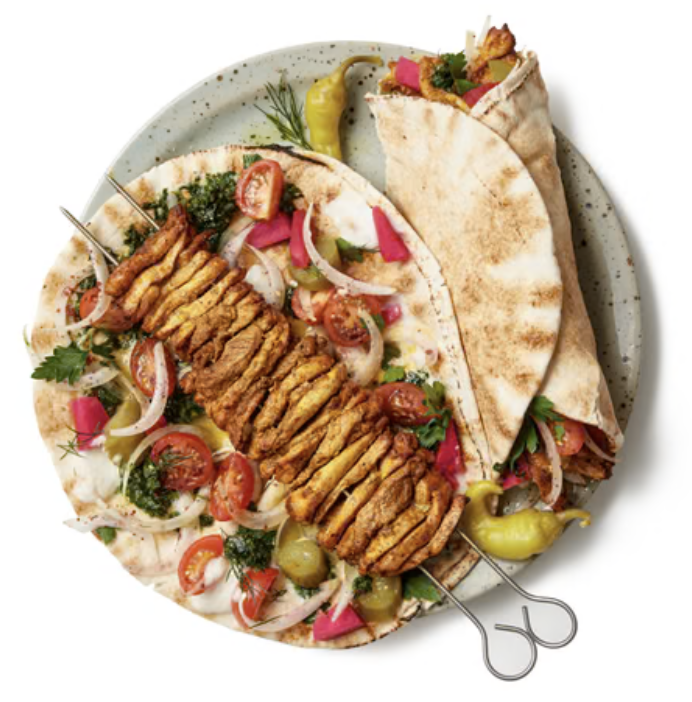

Chicken Shawarma

Ingredients
For The Marinade
- 1 kg chicken thigh fillets
- 1 large garlic clove
- 1 tbsp ground coriander
- 1 tbsp ground cumin
- 1 tbsp ground cardamon
- 1 tsp ground cayenne pepper
- 2 tsp smoked paprika
- 2 tsp salt
- Black pepper
- 2 tbsp lemon juice
- 3 tbsp olive oil
For The Yoghurt Sauce
- 260 g Greek yoghurt
- 1 clove garlic
- 1 tsp cumin
- Squeeze of lemon juice
- Salt and pepper
For The Shawarma
- 4 - 5 flatbreads
- Sliced lettuce
- Tomato slices
- Red onion
- Cheese
- Hot sauce of choice
Instructions
- Marinade chicken – Combine the marinade ingredients in a large ziplock bag. Add the chicken, seal, the massage from the outside with your hands to make sure each piece is coated. Marinate 24 hours (minimum 3 hours).
- Yogurt Sauce – Combine the Yogurt Sauce ingredients in a bowl and mix. Cover and put in the fridge until required (it will last for 3 days in the fridge).
- Preheat stove or BBQ – Heat a large non-stick skillet with 1 tablespoon over medium high heat, or lightly brush a BBQ hotplate/grills with oil and heat to medium high.
- Cook chicken – Place chicken in the skillet or on the grill and cook the first side for 4 to 5 minutes until nicely charred. Turn and cook the other side for 3 to 4 minutes (the 2nd side takes less time).
- Rest – Remove chicken from the grill and cover loosely with foil. Set aside to rest for 5 minutes.
To Serve
- Slice chicken and pile onto platter alongside flatbreads, Salad and the Yoghurt Sauce
- To make a wrap, get a piece of flatbread and smear with Yoghurt Sauce. Top with a bit of lettuce and tomato and Chicken Shawarma. Roll up and enjoy!